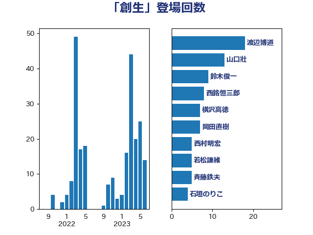

単語「創生」

| 渡辺博道 | 自由民主党 | 18 回 |
| 山口壯 | 自由民主党 | 13 回 |
| 鈴木俊一 | 自由民主党 | 9 回 |
| 西銘恒三郎 | 自由民主党 | 8 回 |
| 横沢高徳 | 立憲民主党 | 7 回 |
| 岡田直樹 | 自由民主党 | 7 回 |
| 西村明宏 | 自由民主党 | 5 回 |
| 若松謙維 | 公明党 | 5 回 |
| 斉藤鉄夫 | 公明党 | 5 回 |
| 石垣のりこ | 立憲民主党 | 4 回 |
| 馬場雄基 | 立憲民主党 | 3 回 |
| 野田聖子 | 自由民主党 | 3 回 |
| 坂本祐之輔 | 立憲民主党 | 3 回 |
| 古川元久 | 国民民主党 | 3 回 |
| ながえ孝子 | 無所属 | 3 回 |
| 高橋光男 | 公明党 | 2 回 |
| 金子恭之 | 自由民主党 | 2 回 |
| 野中厚 | 自由民主党 | 2 回 |
| 進藤金日子 | 自由民主党 | 2 回 |
| 蓮舫 | 立憲民主党 | 2 回 |
| 菊田真紀子 | 立憲民主党 | 2 回 |
| 若宮健嗣 | 自由民主党 | 2 回 |
| 秋葉賢也 | 自由民主党 | 2 回 |
| 福田昭夫 | 立憲民主党 | 2 回 |
| 田嶋要 | 立憲民主党 | 2 回 |
| 甘利明 | 自由民主党 | 2 回 |
| 片山さつき | 自由民主党 | 2 回 |
| 横山信一 | 公明党 | 2 回 |
| 梅村聡 | 日本維新の会 | 2 回 |
| 柴愼一 | 立憲民主党 | 2 回 |
| 松本剛明 | 自由民主党 | 2 回 |
| 末次精一 | 立憲民主党 | 2 回 |
| 早坂敦 | 日本維新の会 | 2 回 |
| 新妻秀規 | 公明党 | 2 回 |
| 岸田文雄 | 自由民主党 | 2 回 |
| 小渕優子 | 自由民主党 | 2 回 |
| 小沼巧 | 立憲民主党 | 2 回 |
| 小島敏文 | 自由民主党 | 2 回 |
| 宮本周司 | 自由民主党 | 2 回 |
| 国定勇人 | 自由民主党 | 2 回 |
| 仁木博文 | 無所属 | 2 回 |
| 高橋はるみ | 自由民主党 | 1 回 |
| 高木真理 | 立憲民主党 | 1 回 |
| 鎌田さゆり | 立憲民主党 | 1 回 |
| 金子恵美 | 立憲民主党 | 1 回 |
| 野田国義 | 立憲民主党 | 1 回 |
| 遠藤良太 | 日本維新の会 | 1 回 |
| 谷田川元 | 立憲民主党 | 1 回 |
| 西岡秀子 | 国民民主党 | 1 回 |
| 藤原崇 | 自由民主党 | 1 回 |
| 羽田次郎 | 立憲民主党 | 1 回 |
| 緒方林太郎 | 無所属 | 1 回 |
| 緑川貴士 | 立憲民主党 | 1 回 |
| 竹谷とし子 | 公明党 | 1 回 |
| 竹詰仁 | 国民民主党 | 1 回 |
| 稲津久 | 公明党 | 1 回 |
| 石川博崇 | 公明党 | 1 回 |
| 牧原秀樹 | 自由民主党 | 1 回 |
| 片山大介 | 日本維新の会 | 1 回 |
| 清水貴之 | 日本維新の会 | 1 回 |
| 河野太郎 | 自由民主党 | 1 回 |
| 江島潔 | 自由民主党 | 1 回 |
| 永岡桂子 | 自由民主党 | 1 回 |
| 森屋宏 | 自由民主党 | 1 回 |
| 梅谷守 | 立憲民主党 | 1 回 |
| 松村祥史 | 自由民主党 | 1 回 |
| 本庄知史 | 立憲民主党 | 1 回 |
| 掘井健智 | 日本維新の会 | 1 回 |
| 平山佐知子 | 無所属 | 1 回 |
| 川田龍平 | 立憲民主党 | 1 回 |
| 川崎ひでと | 自由民主党 | 1 回 |
| 岸真紀子 | 立憲民主党 | 1 回 |
| 岩渕友 | 日本共産党 | 1 回 |
| 山添拓 | 日本共産党 | 1 回 |
| 山本剛正 | 日本維新の会 | 1 回 |
| 小林鷹之 | 自由民主党 | 1 回 |
| 小林茂樹 | 自由民主党 | 1 回 |
| 寺田静 | 無所属 | 1 回 |
| 宮本徹 | 日本共産党 | 1 回 |
| 宮下一郎 | 自由民主党 | 1 回 |
| 守島正 | 日本維新の会 | 1 回 |
| 堂込麻紀子 | 無所属 | 1 回 |
| 堀場幸子 | 日本維新の会 | 1 回 |
| 吉川赳 | 無所属 | 1 回 |
| 友納理緒 | 自由民主党 | 1 回 |
| 加藤竜祥 | 自由民主党 | 1 回 |
| 冨樫博之 | 自由民主党 | 1 回 |
| 保岡宏武 | 自由民主党 | 1 回 |
| 住吉寛紀 | 日本維新の会 | 1 回 |
| 中川貴元 | 自由民主党 | 1 回 |
| 中川康洋 | 公明党 | 1 回 |
| 中川宏昌 | 公明党 | 1 回 |
| 中司宏 | 日本維新の会 | 1 回 |
| 上杉謙太郎 | 自由民主党 | 1 回 |
| たがや亮 | れいわ新選組 | 1 回 |
| こやり隆史 | 自由民主党 | 1 回 |
| おおつき紅葉 | 立憲民主党 | 1 回 |